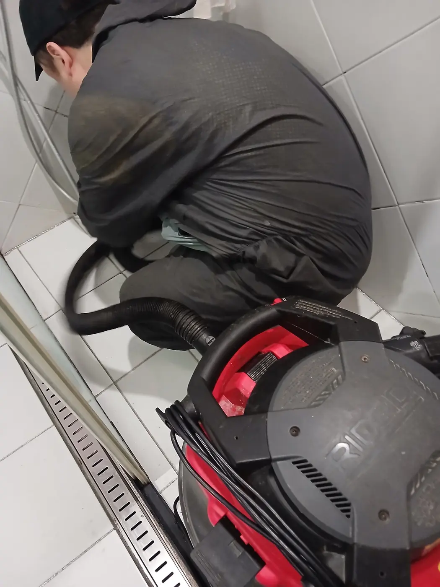
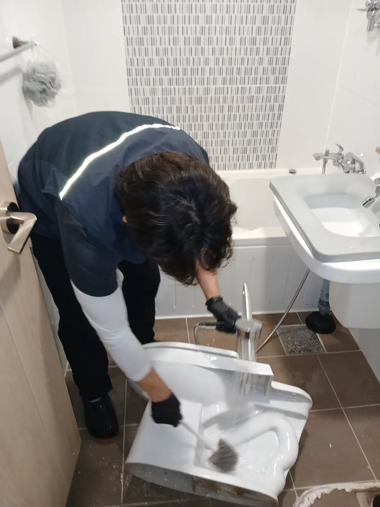
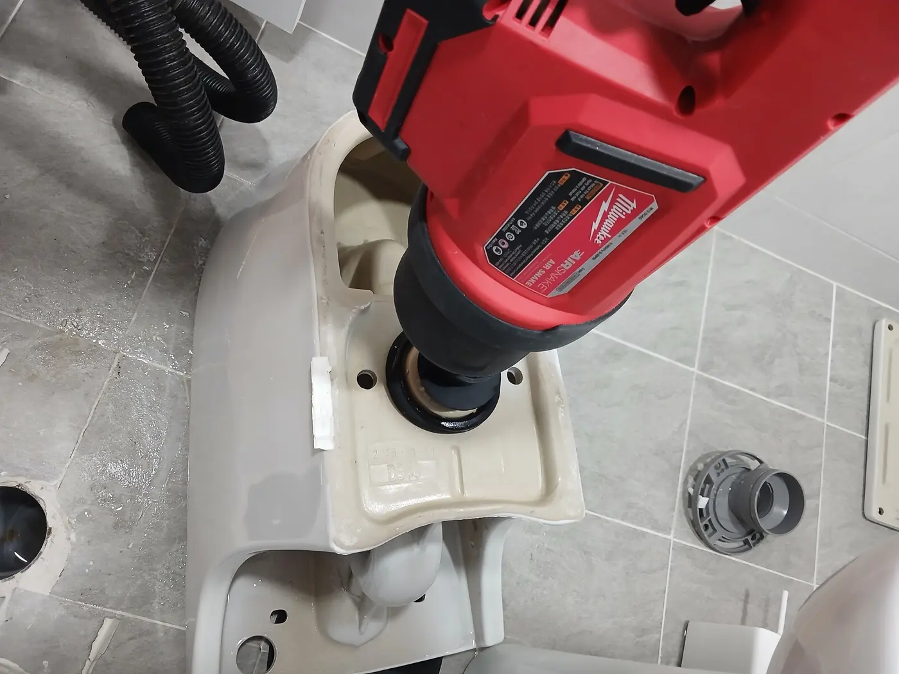

강남구 역삼동 변기막힘 접수 증상
물을 내리면 변기 수위가 올라오고 배수가 원활하지 않은 증상이 반복됐습니다. 단순한 휴지 막힘으로 보일 수 있지만, 물이 빠지는 속도와 수위 회복 상태를 확인한 결과 변기 내부 통로에 단단한 이물질이 걸려 있을 가능성이 높았습니다. 넘침과 역류를 막기 위해 추가 사용을 중단한 뒤 작업을 시작했습니다.
1단계: 변기 안쪽에서 석션 작업
먼저 변기를 탈거하지 않고 해결할 수 있는지 확인하기 위해 석션기 호스를 변기 내부에 직접 삽입했습니다. 흡입 압력을 조절하면서 여러 차례 작업했지만 배수 상태가 충분히 회복되지 않았습니다. 일반적인 오염물이라면 석션으로 이동하거나 흡입될 수 있지만, 이번 역삼동 변기막힘은 질기고 단단한 이물질이 굴곡진 통로에 걸려 움직이지 않는 상태로 판단했습니다.

2단계: 변기 탈거 후 내부 통로 확인
무리하게 압력만 높이면 도기나 연결부에 불필요한 부담을 줄 수 있어 변기를 탈거했습니다. 변기를 분리하면 변기 자체의 내부 통로와 바닥 배관을 나누어 확인할 수 있기 때문에 막힘 위치를 더 정확하게 판단할 수 있습니다. 이번 현장은 바닥 배관보다 변기 도기 내부의 굴곡 구간에 이물질이 뭉쳐 있었습니다.

3단계: 에어 장비로 막힘 관통 및 이물질 제거
탈거한 변기의 배수 통로에 에어 장비를 연결해 막힘 구간을 관통했습니다. 내부에서는 휴지와 함께 깻잎, 상추, 양배추 줄기로 추정되는 질기고 단단한 채소류가 뒤엉킨 채 확인됐습니다. 이런 음식물은 변기 트랩의 좁고 굴곡진 구간에 걸리기 쉬우며, 휴지와 엉키면 덩어리가 단단해져 석션만으로 빠지지 않을 수 있습니다.

재설치 후 반복 통수 확인
이물질을 제거한 뒤 변기 내부 통로와 바닥 배관의 흐름을 다시 확인하고 변기를 재설치했습니다. 물과 휴지를 함께 내려 반복 테스트한 결과 수위가 빠르게 안정됐고, 배수 지연이나 역류 없이 정상적으로 내려가는 것을 확인했습니다. 변기 주변의 고정 상태와 누수 여부까지 점검한 뒤 강남구 역삼동 변기막힘 작업을 마무리했습니다.
변기에 음식물을 버리면 왜 잘 막힐까요?
깻잎이나 상추처럼 넓고 질긴 잎, 양배추 심과 줄기처럼 단단한 음식물은 물에 쉽게 풀어지지 않습니다. 변기 내부는 곧은 관이 아니라 물을 가두는 굴곡진 트랩 구조이므로 음식물이 휴지와 만나면 이 구간에 걸릴 수 있습니다. 음식물은 양이 적더라도 변기에 버리지 말고 일반·음식물 폐기 기준에 따라 처리하는 것이 가장 확실한 예방법입니다.
강남구 변기막힘 자주 묻는 질문
변기막힘은 항상 변기를 탈거해야 하나요?
아닙니다. 단순 막힘은 석션이나 관통 장비로 해결되는 경우가 많습니다. 다만 이번 역삼동 현장처럼 반복 작업에도 배수가 회복되지 않거나 도기 내부에 단단한 이물질이 의심될 때는 원인 확인과 안전한 제거를 위해 탈거가 필요할 수 있습니다.
석션으로 안 뚫리면 배관이 막힌 건가요?
반드시 그렇지는 않습니다. 변기 자체의 굴곡진 통로에 이물질이 걸린 경우에도 석션 효과가 제한될 수 있습니다. 변기를 탈거해 도기 내부와 바닥 배관을 구분 점검해야 정확한 위치를 판단할 수 있습니다.
싱크대막힘이나 하수구막힘도 같은 장비를 사용하나요?
증상과 배관 구조에 따라 장비가 달라집니다. 강남구 싱크대막힘은 기름 슬러지, 하수구막힘은 배관 내부 오염이나 공용관 문제까지 확인해야 하므로 현장 진단 후 석션·내시경·샤프트·고압세척 가운데 적합한 방법을 선택합니다.